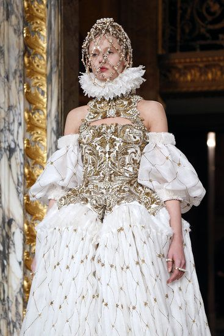
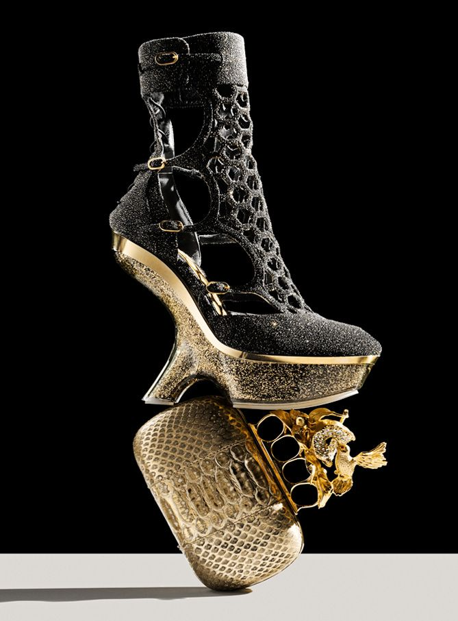
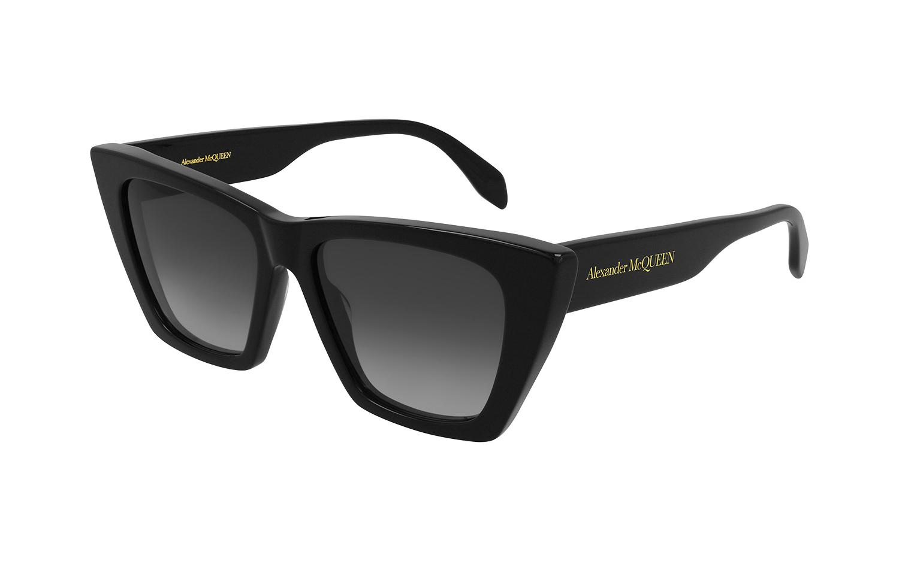

Alexander McQueen postao je glavni dizajner modne linije Givenchy u vlasništvu Louis Vuittona, a 2004. godine pokrenuo je vlastitu liniju muške odjeće. McQueen je četiri puta osvojio nagradu Britanskog modnog vijeća za britanskog dizajnera godine i bio je imenovan zapovjednikom Reda Britanskog Carstva. Počinio je samoubojstvo 2010. godine, nedugo nakon smrti svoje majke. Nedugo nakon što je stekao diplomu, McQueen je započeo vlastiti posao dizajnirajući odjeću za žene. Postigao je ogroman uspjeh s uvođenjem svojih "bumster" hlača, nazvanih tako zbog izuzetno niskog struka. Samo četiri godine nakon završetka dizajnerske škole, McQueen je imenovan glavnim dizajnerom Givenchyja, francuske haute couture modne kuće u vlasništvu Louis Vuittona. Iako je to bio prestižan posao, McQueen ga je prihvatio nevoljko, a njegov mandat tamo (1996.-2001.) bio je burno razdoblje u dizajnerovom životu. Iako je pomicao granice onoga što su ljudi očekivali od mode (jedna od njegovih revija predstavljala je model s amputacijom koji je pistom hodao na rezbarenim drvenim nogama), McQueen je osjećao da je sputavan. Dizajner bi kasnije rekao da ga je posao "ograničavao u kreativnosti," iako je također priznao sljedeće: "Loše sam se ponašao prema Givenchyju. Bio mi je to samo novac. Ali ništa nisam mogao učiniti: jedini način na koji bi to funkcioniralo bio bi da su mi dopustili promijeniti cijeli koncept kuće, da joj dam novi identitet, a to nikada nisu željeli." Čak i uz svoje rezerve prema svom radu, McQueen je osvojio nagradu za britanskog dizajnera godine 1996., 1997. i 2001. godine, sve tijekom svog vremena u Givenchyju.
  